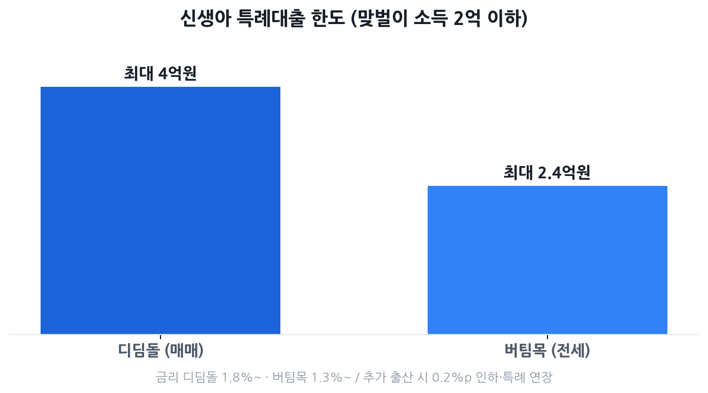

신생아 특례대출 완벽 가이드 2026
— 디딤돌·버팀목 자격·금리·대환 총정리
아이를 낳았거나 곧 낳을 예정인데 "우리 맞벌이라 소득이 높아서 안 될까 봐" 걱정하는 분이 많습니다. 결론부터 말하면, 부부합산 소득 2억 원 이하(맞벌이 기준)라면 신생아 특례대출을 쓸 수 있습니다. 집을 사든 전세로 들어가든, 시중 금리보다 훨씬 낮은 연 1%대~2%대 금리로 최대 4억 원(매매) 또는 2.4억 원(전세)을 빌릴 수 있어요. 게다가 아이를 더 낳으면 금리가 추가로 내려가고 저금리 적용 기간도 늘어납니다.
- 2023년 1월 1일 이후 출산했거나 출산 예정인 신혼부부
- "맞벌이라 소득이 높아 안 될까 봐" 걱정하는 부부
- 매매(디딤돌)와 전세(버팀목) 중 어떤 게 유리한지 모르겠는 분
- 기존 주담대를 신생아 특례로 갈아탈 수 있는지 궁금한 분

신생아 특례대출이란? — 디딤돌 vs 버팀목 한눈 비교
신생아 특례대출은 2023년 1월 1일 이후 출생(또는 입양)한 자녀가 있는 가구에게 일반 기금대출보다 낮은 금리를 한시적으로 적용해 주는 주택도시기금 상품입니다. 2024년 1월 말부터 접수가 시작됐으며, 2026년 현재도 계속 운영 중입니다.
크게 두 가지로 나뉩니다. 신생아 특례 디딤돌대출은 집을 살 때 쓰는 주택구입자금 대출이고, 신생아 특례 버팀목대출은 전세로 들어갈 때 쓰는 전세자금 대출입니다.
| 구분 | 신생아 특례 디딤돌 (매매) | 신생아 특례 버팀목 (전세) |
|---|---|---|
| 목적 | 주택 구입 | 전세 입주 |
| 대상 주택 | 주택 평가액 9억 원 이하, 전용 85㎡ 이하 | 보증금 수도권 5억 이하·지방 4억 이하, 전용 85㎡ 이하 |
| 소득 요건 | 부부합산 2억 원 이하 (단독 1.3억 이하, 맞벌이 각 1.3억 이하) | 부부합산 2억 원 이하 (단독 1.3억 이하, 맞벌이 각 1.3억 이하) |
| 순자산 요건 | 5.11억 원 이하 (2026년 기준) | 3.45억 원 이하 (2026년 기준) |
| 대출 한도 | 최대 4억 원 (LTV 70%, DTI 60%) ※ 25.6.27 이전 계약 건 5억 원 |
최대 2.4억 원 (보증금의 80%) ※ 25.6.27 이전 계약 건 3억 원 |
| 특례금리 적용 기간 | 기본 5년 (추가 출산 1명당 +5년, 최장 15년) | 기본 4년 (추가 출산 1명당 +4년, 최장 12년) |
| 특례금리 범위 | 연 1.8% ~ 4.5% | 연 1.3% ~ 4.3% |
| 우대금리 하한 | 연 1.2% | 연 1.0% |
| 대환 가능 여부 | 가능 (1주택자, 소득 1.3억 이하 조건 별도) | 해당 없음 |
| 무주택 요건 | 무주택 (대환은 1주택 허용) | 무주택 |
| 취급 은행 | 우리·신한·KB국민·NH농협·하나은행 | |
자격 자가진단 — 소득·자산·출산 요건 체크리스트
아래 5가지를 순서대로 확인하세요. 하나라도 탈락하면 신청이 어렵습니다.
① 출산 요건
- 2023년 1월 1일 이후 출생(또는 입양)한 자녀가 있어야 합니다.
- 대출 신청일 기준으로 출산일부터 2년 이내여야 합니다. 입양의 경우 대출 접수일 기준 입양아가 만 2세 미만이어야 합니다.
- 임신 중인 태아는 포함되지 않습니다.
- 혼인 신고를 하지 않은 미혼모·미혼부도 신청 가능합니다.
② 소득 요건
- 외벌이: 신청인 단독 소득이 연 1.3억 원 이하
- 맞벌이: 부부 합산 소득이 연 2억 원 이하이면서 부부 각 1인의 소득이 1.3억 원 이하
③ 순자산 요건
2026년 기준 순자산 상한은 다음과 같습니다(통계청 가계금융복지조사 기준, 매년 갱신).
| 상품 | 2026년 순자산 상한 | 산정 기준 |
|---|---|---|
| 신생아 특례 디딤돌 (매매) | 5.11억 원 | 소득 4분위 가구 평균 |
| 신생아 특례 버팀목 (전세) | 3.45억 원 | 소득 3분위 가구 평균 |
순자산은 부동산·예금·주식 등 모든 자산에서 대출금·카드 미결제 등 부채를 뺀 금액입니다. 부부 합산으로 심사합니다.
④ 주택(주거) 요건
- 디딤돌: 전용면적 85㎡ 이하, 주택 평가액 9억 원 이하
- 버팀목: 전용면적 85㎡ 이하, 임차보증금 수도권 5억 원 이하, 수도권 외 4억 원 이하
- 읍·면 지역은 100㎡ 이하도 허용됩니다.
⑤ 무주택 요건
세대주를 포함한 세대원 전원이 무주택이어야 합니다. 분양권과 조합원 입주권도 주택 보유로 간주됩니다. 디딤돌 대환은 1주택자도 가능합니다.
금리 비교표 — 소득 구간별 내가 낼 이자는?
특례금리는 소득 구간과 대출 기간에 따라 세분됩니다. 특례금리는 디딤돌 기준 기본 5년, 버팀목 기준 기본 4년 동안만 적용됩니다.
신생아 특례 디딤돌 (매매) 금리
| 부부합산 연소득 | 10년 | 20년 | 30년 |
|---|---|---|---|
| 2천만 원 이하 | 1.80% | 2.00% | 2.05% |
| 2천만 ~ 4천만 원 | 2.15% | 2.35% | 2.40% |
| 4천만 ~ 6천만 원 | 2.40% | 2.60% | 2.65% |
| 6천만 ~ 8.5천만 원 | 2.65% | 2.85% | 2.90% |
| 8.5천만 ~ 1억 원 | 2.90% | 3.10% | 3.20% |
| 1억 ~ 1.3억 원 | 3.20% | 3.40% | 3.50% |
| (맞벌이) 1.3억 ~ 1.5억 | 3.50% | 3.70% | 3.80% |
| (맞벌이) 1.5억 ~ 1.7억 | 3.85% | 4.05% | 4.15% |
| (맞벌이) 1.7억 ~ 2억 | 4.20% | 4.40% | 4.50% |
지방 소재 주택은 0.2%p 인하 적용. 우대금리(청약저축 납입기간, 전자계약 등) 중복 적용 후 최저 하한은 연 1.2%.
신생아 특례 버팀목 (전세) 금리
전세는 보증금 구간도 금리에 영향을 줍니다.
| 부부합산 연소득 | 보증금 5천만 이하 | 5천만 ~ 1억 | 1억 ~ 1.5억 | 1.5억 초과 |
|---|---|---|---|---|
| 2천만 원 이하 | 1.30% | 1.40% | 1.50% | 1.60% |
| 2천만 ~ 4천만 원 | 1.60% | 1.70% | 1.80% | 1.90% |
| 4천만 ~ 6천만 원 | 1.90% | 2.00% | 2.10% | 2.20% |
| 6천만 ~ 7.5천만 원 | 2.20% | 2.30% | 2.40% | 2.50% |
| 7.5천만 ~ 1억 원 | 2.55% | 2.65% | 2.75% | 2.85% |
| 1억 ~ 1.3억 원 | 2.90% | 3.00% | 3.10% | 3.20% |
| (맞벌이) 1.3억 ~ 1.5억 | 3.25% | 3.35% | 3.45% | 3.55% |
| (맞벌이) 1.5억 ~ 1.7억 | 3.60% | 3.70% | 3.80% | 3.90% |
| (맞벌이) 1.7억 ~ 2억 | 4.00% | 4.10% | 4.20% | 4.30% |
지방 소재 주택은 0.2%p 인하. 우대금리 중복 적용 후 최저 하한은 연 1.0%.
매매 vs 전세 의사결정 가이드
두 상품 모두 신청할 수 있는 상황이라면, "지금 매매(디딤돌)가 나은가, 전세(버팀목)가 나은가"를 판단해야 합니다. 답은 하나가 아니라 상황마다 다릅니다.
디딤돌(매매)이 유리한 경우
- 원하는 지역에 9억 원 이하 매물이 있고, 실거주 의사가 명확한 경우
- 현재 전세보증금이 높아 버팀목 한도(2.4억)로 커버가 안 되는 경우
- 생애최초라면 LTV 80% 적용으로 자기자금 부담을 줄일 수 있는 경우
- 장기적으로 자산을 형성하고 싶고, 아이 학군을 일찍 확정하고 싶은 경우
- 기존 주담대 금리가 높아 신생아 특례로 갈아타기(대환)가 가능한 경우
버팀목(전세)이 유리한 경우
- 목돈이 부족해 매매 자기자금(최소 20~30% 필요)을 마련하기 어려운 경우
- 2~3년 안에 이사 계획이 있어 매매가 부담스러운 경우
- 순자산이 3.45억 이하라서 전세 자산 요건을 충족하는 경우
- 전세보증금이 수도권 5억, 지방 4억 이하인 경우
| 판단 기준 | 디딤돌(매매) 선택 | 버팀목(전세) 선택 |
|---|---|---|
| 자기자금 여력 | 매매가의 20~30% 이상 있음 | 부족함 |
| 거주 기간 계획 | 5년 이상 장기 거주 | 2~3년 후 이사 가능성 |
| 대출 한도 필요액 | 2.4억 이상 필요 | 2.4억 이내로 충분 |
| 순자산 | 3.45억 초과 ~ 5.11억 이하 | 3.45억 이하 |
| 특례금리 기간 우선 | 기본 5년(최장 15년) | 기본 4년(최장 12년) |
추가 출산 우대 — 금리 인하 + 특례기간 연장
신생아 특례대출의 가장 강력한 혜택 중 하나가 추가 출산 우대입니다. 대출 접수일 기준 2년 내에 추가로 아이를 낳으면 금리도 내려가고, 저금리 기간도 늘어납니다.
| 우대 항목 | 디딤돌 (매매) | 버팀목 (전세) |
|---|---|---|
| 2년 내 추가 출산 자녀 1명당 금리 인하 | 0.2%p 인하 (자녀당 최대 5년 적용) | 0.2%p 인하 (자녀당 최대 4년 적용) |
| 추가 출산 자녀 1명당 특례기간 연장 | +5년 (최장 15년) | +4년 (최장 12년) |
| 2년 초과 미성년 자녀 1명당 금리 인하 | 0.1%p (최대 5년) | 0.1%p (최대 4년) |
| 우대금리 적용 하한 | 연 1.2% | 연 1.0% |
예를 들어 소득 4천만 ~ 6천만 원 구간에서 디딤돌 30년을 받았다면 기본 금리는 2.65%. 여기서 청약저축 우대 0.3%p + 추가 출산 0.2%p를 받으면 2.15%까지 낮아질 수 있습니다.
기존 대출 대환 — 갈아타기 조건과 전략
신생아 특례 디딤돌은 기존에 주담대가 있는 1주택자도 대환으로 이용할 수 있습니다. 신청 시기에 제한이 없어서, 아이를 낳은 뒤 2년 안에 언제든 신청 가능합니다.
대환 주요 조건
- 1주택 보유자여야 하며, 기존 주담대 잔액 범위 내에서만 신청 가능합니다.
- 대환 시에는 소득 요건이 부부합산 1.3억 원 이하로 더 엄격하게 적용됩니다(맞벌이 2억 기준 미적용).
- 나머지 자격요건(출산, 순자산, 주택 요건)은 일반 신규 대출과 동일합니다.
중도상환수수료 면제
2024년 8월 12일부터 2026년 12월 31일까지 중도상환된 원금에 대해 중도상환수수료가 면제됩니다. 기존 시중은행 주담대를 신생아 특례로 갈아탈 때 수수료 부담 없이 이동할 수 있는 좋은 기회입니다.
놓치면 손해 보는 5가지 함정
- ① 2년 이내 신청 기한을 놓침. 출산일로부터 2년 안에 대출을 신청해야 합니다. 아이가 돌이 지났다고 방심하다가 기한을 넘기면 일반 디딤돌·버팀목으로 전환해야 해서 금리가 높아집니다. 출산 직후 대출 신청 준비를 시작하는 것이 좋습니다.
- ② 순자산 심사를 가볍게 봄. 버팀목 순자산 상한이 3.45억 원으로 낮습니다. 전세보증금 반환 예정액, 주식·펀드, 배우자 명의 예금까지 모두 합산됩니다. '소득은 낮은데 자산이 많은' 경우 탈락할 수 있으니 신청 전에 직접 계산해 보세요.
- ③ 대환은 소득 1.3억 기준임을 모름. 신규 구입과 달리 대환 시에는 부부합산 1.3억 원 이하 기준이 적용됩니다. 맞벌이 부부가 "우리 2억 이하니까 대환 가능하다"고 착각하면 낭패를 봅니다.
- ④ 추가 출산 우대를 신청하지 않음. 대출 기간 중 아이를 더 낳았다면 자동으로 금리가 내려가지 않습니다. 반드시 은행 창구를 직접 방문해 조건 변경을 신청해야 합니다. 1명당 0.2%p이므로 두 아이면 0.4%p, 수십 년 대출에서는 상당한 금액입니다.
- ⑤ 특례기간 종료 후 금리 상승을 계산하지 않음. 디딤돌은 5년, 버팀목은 4년 후에 금리가 바뀝니다. 소득 8.5천만 원(디딤돌) 또는 7.5천만 원(버팀목)을 초과하면 시중은행 주담대 금리 수준으로 전환됩니다. 초기 월 상환액만 보고 대출을 결정하면 위험합니다. 특례 종료 후 월 상환액도 시뮬레이션해 두세요.
자주 묻는 질문
Q. 맞벌이 부부인데 소득이 합산 1억 5천만 원입니다. 신생아 특례대출을 받을 수 있나요?
네, 신청 가능합니다. 맞벌이 기준으로 부부합산 소득 2억 원 이하(부부 각 1인이 1.3억 원 이하)이면 대상이 됩니다. 다만 소득 구간이 높을수록 금리도 높게 적용됩니다. 합산 1.5억 원이면 (맞벌이) 1.3억~1.5억 구간에 해당해, 디딤돌 30년 기준 연 3.80%가 적용됩니다.
Q. 2023년 이전에 태어난 아이도 신생아 특례대출을 쓸 수 있나요?
아닙니다. 신생아 특례대출은 2023년 1월 1일 이후 출생(또는 입양)한 자녀가 있는 가구만 해당합니다. 또한 대출 신청일 기준 출산일로부터 2년 이내여야 하므로, 기간이 지나면 일반 디딤돌·버팀목 대출로 신청해야 합니다.
Q. 이미 주담대가 있는데 신생아 특례로 갈아탈 수 있나요?
네. 신생아 특례 디딤돌 대출은 1주택 보유자의 기존 주택담보대출을 대환하는 것을 허용합니다. 기존 주담대 잔액 범위 내에서 신청 가능하며, 대환 시에는 부부합산 소득 1.3억 원 이하 조건이 별도로 적용됩니다(맞벌이 2억 기준 불가). 2026년 12월 31일까지 중도상환수수료가 면제되어 비용 없이 갈아탈 수 있습니다.
Q. 추가 출산을 하면 금리가 더 낮아지나요?
네. 대출 접수일 기준 2년 내 추가 출산한 자녀 1명당 0.2%p 금리 우대가 적용됩니다. 디딤돌은 추가 출산 1명당 특례기간도 5년 연장(최장 15년), 버팀목은 4년 연장(최장 12년)됩니다. 대출 기간 중 추가 출산을 한 경우에도 은행 내방을 통해 조건 변경 신청을 해야 반영됩니다.
Q. 신생아 특례 5년 특례금리가 끝나면 금리가 얼마나 오르나요?
특례기간 종료 후에는 대출 취급 시 산정된 부부합산 소득 기준으로 금리가 변경됩니다. 소득 8.5천만 원(디딤돌) 이하면 신혼부부 디딤돌 금리 수준으로 가산되고, 초과하면 시중은행 주담대 금리 수준으로 전환됩니다. 추가 출산으로 특례기간을 연장해 두면 전환 시점을 최대 15년까지 늦출 수 있습니다.
본 글은 주택도시기금 공식 포털(myhome.go.kr), 한국주택금융공사(hf.go.kr), 뱅크샐러드 등 공개 자료를 바탕으로 2026년 6월 7일 기준으로 작성됐습니다. 순자산 기준(디딤돌 5.11억, 버팀목 3.45억)은 통계청 가계금융복지조사 결과에 따라 매년 변경됩니다. 소득 요건(맞벌이 2억 상한)은 2025년 소득기준 2.5억 완화 논의가 최종 무산된 수치를 반영했습니다. 대출 한도(디딤돌 4억·버팀목 2.4억)는 2025년 6월 27일 이후 계약 체결 건 기준이며, 이전 계약 건은 각각 5억·3억이 적용됩니다. 금리·자격·한도는 시장 상황과 정책 변경에 따라 수시로 달라질 수 있으니, 신청 전 반드시 주택도시기금 포털(myhome.go.kr) 또는 취급 은행(우리·신한·국민·농협·하나)에서 최신 조건을 확인하시기 바랍니다. 본 페이지는 정보 제공 목적이며, 대출 승인 또는 금리를 보장하지 않습니다.